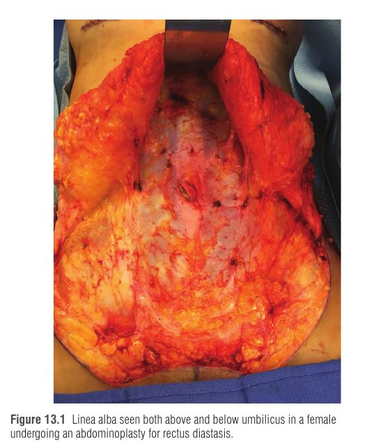
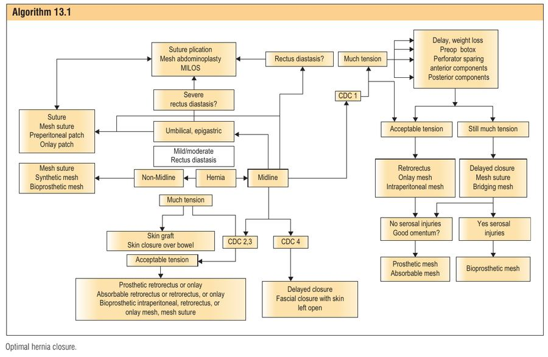
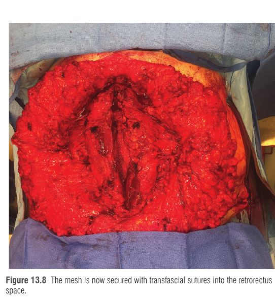
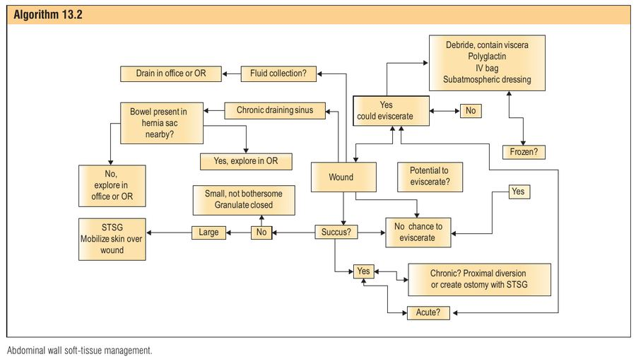

דופן הבטן היא "איבר": מגינה על הקרביים ומייצרת גליל בלחץ שעליו נשענים הגו, הגפיים העליונות והראש, ושמאפשר הליכה. 11–23% מסגירות הלפרוטומיה מפתחות בקע חתך (incisional hernia), ועד 40% בקבוצות סיכון (השמנה חולנית, מפרצת אבי העורקים הבטני); שיעור הניתוח החוזר בפועל תוך 5 שנים ~3.8%. הפרק מציג את גישת המחבר: אנטומיה, פרפוזיה, ובעיקר פיזור כוחות כדי למנוע קריעת תפר (suture pull-through).
אגן = תחתית הגליל · רטרופריטונאום = דופן אחורית קשיחה · סרעפת = בוכנה · שיעול/ולסלווה → לחץ ↑ → הקרביים הניידים נדחפים החוצה (צנטריפוגלית) → הדופן מחזירה כוח צנטריפטלי: סטטי (פאסיה) + אקטיבי (כיווץ שריר).
בקע נוצר כשהכוחות הצנטריפטליים כבר לא מספיקים. מכיוון שהלחץ שבחוץ נמוך, הבקע גדל עם הזמן, ובמקרה הקיצוני מתפתח loss of domain – חלל הבטן מאבד היענות ולא מסוגל "לקבל בחזרה" את תוכן הבקע.
חוק לפלס (Laplace): מתח הדופן עולה עם הרדיוס. רדיוס הגליל קטן מהאפיגסטריום להיפוגסטריום → פחות מתח ליד הסימפיזה. זה מסביר למה חתך Pfannenstiel כמעט לא מפתח בקע, בעוד תיקון אפיגסטרי עם דיאסטזיס קשה. וגם: המתמחה "מחזיק" את החתך בזמן אקסטובציה – שיעול מגדיל את הרדיוס → מתח ↑ → dehiscence.
איור 1: מנגנון היווצרות בקע חתך – אירוע מכני מוקדם, לא רק "ריפוי ביולוגי חלש".
| מבנה | נקודות מפתח |
|---|---|
| 8 שרירים | 2 רקטוס (סימפיזה → קסיפואיד), ו-3 לטרליים בכל צד: אובליק חיצוני, אובליק פנימי (סיבים ב-~90° זה לזה – כמו צמיג bias-ply), טרנסברסוס אבדומיניס (מגביר לחץ תוך-בטני, תומך בקרביים) |
| Tendinous inscriptions | 3 בכל רקטוס (בטבור, בקסיפואיד, ובאמצע) → "שמונה-פק" ולא שש; מונעות bowstringing (כמו פולי בגידי כופפי האצבעות) |
| Linea alba | "הגיד המרכזי" – מחזיק את השרירים באורך סרקומרי אופטימלי. ~1.1 ס"מ ברוחב בנוליפרה, >2 ס"מ אחרי לידה; דיאסטזיס משמעותי – 8–10 ס"מ |
| Semilunar lines | בין הרקטוס לשרירים הלטרליים, מצלע 9 לפקעת הפוביס |
| אספקת דם | DIEA ו-SEA לרקטוס + ענפים עם העצבים הבין-צלעיים; הלטרליים – בין-צלעיים ולומבריים + ענף עולה של DCIA. עור תחתון: פרפורטורים של DIEA, SIEA, בין-צלעיים, DCIA. ההריון "משהה" (delay) את העור התחתון ופותח choke vessels → מאפשר undermining רחב באבדומינופלסטיה |
| עצבוב | T7–T11 (thoracoabdominal), T12 (subcostal) – מוטורי+תחושתי; L1 (iliohypogastric, ilioinguinal, genitofemoral) – תחושתי בלבד. ACNES = לחץ על ענפי העור הקדמיים. חתך ניצב לדרמטומים (Kocher) מדנרב; הסימן: רקטוס דק יותר ב-CT |
"Denervation bulge" בחתך צדי הוא בדרך כלל בקע אמיתי של האובליק הפנימי והטרנסברסוס עם אובליק חיצוני שלם – ולא דנרבציה אמיתית.
פיזיולוגיית שריר (עקומת Starling): בקע משחרר את כל 8 השרירים מהלינאה אלבה → הם מתקצרים → חפיפת סרקומרים → כוח מרבי נמוך. בנוסף הכיווץ הופך מאיזומטרי (כוח ללא שינוי אורך) לאיזוטוני (השריר מתקצר, הקרביים בורחים לשק) → צריכת אנרגיה גבוהה. תיקון ראשוני מחזיר אורך שריר; גישור ברשת ("tension-free") מבטל את התנועה אך משאיר את השריר קצר וחלש.


בקע <2 ס"מ: תפר – 5.6% חזרה ב-21 חודשים; רשת – 2.2% ניתוח חוזר. רשת = פחות חזרות, יותר סרומות וזיהומים. בזמן אבדומינופלסטיה: פתיחת השק במקביל לגבעול הטבור, כריתת שומן פרה-פריטונאלי, תפר בודד בנגיסה קטנה, ואז פליקציית דיאסטזיס מעל ומתחת שמורידה עומס מהתיקון. חלופות: IPOM לפרוסקופי (חשש לקפל ברשת אחרי פליקציה), "ציפת" הטבור, EMILOS, "mesh abdominoplasty" עם רשת רטרו-רקטלית.
תפרים לבד אינם מספיקים: RCT – 42% חזרה בתפר מול 24% ברשת (עד 6 ס"מ, 3 שנים); ב-10 שנים 63% מול 32%. בניגוד לאורתופדיה, אין "גבס" לבטן (חוץ אולי מבוטוקס).
| סוג רשת | דוגמאות | תכונות |
|---|---|---|
| קבועה מקרופורוזית | פוליפרופילן, פוליאסטר, PVDF | נקבוביות >1 מ"מ מגבילה "גישור" צלקת והתכווצות; משמשת כפיגום צלקת. הנפוצה ביותר |
| מיקרופורוזית | e-PTFE | לא משתלבת אלא נעטפת בקפסולה, מתקמטת; בזיהום חובה להוציא אותה |
| נספגת לאט (סינתטית) | Phasix (P4HB – שנים), BioA (6–7 חודשים), TIGR | מעבירה עומס בהדרגה לרקמה; אין אקסטרוזיה/פיסטולה ארוכת טווח; החוזק עשוי "לחזור" ל-70%. להעריך חזרה 1–2 שנים אחרי הספיגה |
| ביולוגית | חזיר, בקר, אדם; fascia lata עצמית (~10×18 ס"מ) | היקרה ביותר; לא מגשרת לצמיתות; "סלחנית" יותר בזיהום; אפשר להניח מול מעי |
| מיקום | יתרון | חיסרון |
|---|---|---|
| Intraperitoneal (IPOM) | זעיר-פולשני, פחות כאב וזיהום | צריך ציפוי בצד המעי (הידבקויות, פרפורציה); משתלב רק מצד אחד → פחות עמיד; ציוד יקר |
| Onlay (על הפאסיה הקדמית) | ללא מגע במעי, ללא ציפוי | דורש הרמת רקמה רחבה → סרומות ובעיות פצע |
| Retrorectus (sublay) – המועדף | "סנדוויץ'" בין הרקטוס לשכבה האחורית → שילוב פיברו-וסקולרי מהיר; רשת לא מצופה עובדת טוב | רשת מצופה בחלל זה = יותר סיבוכים |
העיקרון: התוצאות הטובות ביותר – סגירה ראשונית של הפגם + רשת תומכת. Bridging (גישור שבו הרשת לא מכוסה ברקמה) = יותר סיבוכים וחזרות. אם יש בקע בחתך – כל החתך "חשוד" ויש לשחזר את כולו (במיוחד עם דיאסטזיס), לא "תיקון נקודתי".
תוצאות: 0% חזרה ב-2 שנים, SSO/SSI 8%.

דופן היענית (אחרי ירידה במשקל, הריונות, דיאליזה פריטונאלית, מיימת) – אפשר להדק בתפרים. דופן קשיחה (אחרי ספסיס, חתכים צדיים, בקע ותיק, קרינה) – נוטה ל-pull-through. כשהמרחק בין הרקטוסים >6–8 ס"מ: טרום-ניתוח – ירידה במשקל, Botox (Onabotulinumtoxin A) 150 יחידות לכל צד ע"י רדיולוגיה פולשנית, פנאומופריטונאום להחזרת domain.
| Anterior components release (עם שימור פרפורטורים) | Posterior components release – TAR | |
|---|---|---|
| מה חותכים | האובליק החיצוני + פאסיה, לטרלית ל-semilunar line, דרך חתך רוחבי 6 ס"מ בתחתית קשת הצלעות (מעל הצלעות עד מתחת ל-ASIS; מנהרה סופרה-פובית לשחרור מלא) | פיתוח החלל הרטרו-רקטלי והמשך לטרלית מעבר ל-semilunar line, ניתוק הטרנסברסוס אבדומיניס – "דיסקציה של עצב פריפרי" |
| זמן/קושי | מהיר – 10–15 דקות | ארוך, טכני, סיכון לבקע לטרלי |
| עור | מקדם עור לקו האמצע → אפשר לכרות צלקת; החתכים הרוחביים נסגרים מעצמם. בלי שימור פרפורטורים – נמק עור מלא (במיוחד אחרי ניתוח מפרצת אבי העורקים עם אובדן כלי לומבריים) | ללא הרמת מתלי עור; אפשר זעיר-פולשני/רובוטי |
| יציבות | לא מערער את ה-semilunar lines; אפשר לסגור אפילו בלי רשת; בד"כ רשת 7.5 ס"מ (~225 סמ"ר לבטן 30 ס"מ) | מחליש את ה-semilunar lines → רשת ענקית (עד 1200 סמ"ר) מקו בית שחי אמצעי לאמצעי; קיבוע מינימלי (חיכוך) → פחות כאב; תנועה מדיאלית גדולה יותר |
| צורה | טבעית יותר | בטן "מעוגלת" בחתך רוחב |
| שימוש מיוחד | — | בליטה תחתונה אחרי DIEP/TRAM |
אחרי הניתוח: ההיענות המוגברת מגבילה עליית לחץ תוך-בטני → פחות תסמונת מדור בטני. ההעדפה בין השיטות שנויה במחלוקת.
Dr. John P. Fischer (מנתח פלסטי, Penn) מדגים את טכניקת ה-TAR – שחרור רכיבים אחורי והנחת רשת רטרו-רקטלית רחבה.
| אפשרות | נתונים ושיקולים |
|---|---|
| בטן פתוחה (open abdomen) | לספסיס, second-look, טראומה, תסמונת מדור. כיסוי זמני: עור, רשת פוליגלקטין, שקית אינפוזיה, VAC. סגירה סדרתית בתפר כשהבצקת יורדת; ביולוגית כגשר (בקע צפוי, אבל "לא שורפים גשרים") |
| תפר ± anterior release | מינימום פתיחת מישורים, פרפוזיה מיטבית; אך ללא תמיכה – 23% חזרה ב-14 חודשים |
| רשת קבועה רטרו-רקטלית | 402 מטופלים (52% CDC2, 42% CDC3, 6% CDC4): SSI 14.2%, הוצאת רשת ~1%, בקע 15.2%. הבעיה: יכולת הצלה גרועה אם צריך להוציא |
| ביולוגית | VHWG המליצה בדרגות 2–4 (עמידות לקולוניזציה); בקע 8.3%–48% בין מרכזים; יקר, יותר SSO → שימוש ירד |
| נספגת (BioA/Phasix) | COBRA (BioA): בקע 17%, SSI 18%. Phasix: SSI 15.2%, חזרה 6.1% (33 מטופלים בלבד) |
| Mesh suture (המצאת המחבר) | רצועות רשת משמשות כתפר – מפזרות כוח ומונעות pull-through, בלי לפתוח מישורים; אם מזדהם – הקשר מתחת לחתך → הוצאה במרפאה. SSO 27%, בקע 6% ב-11.8 חודשים |
בקעי מותן (flank): לרוב בקע של האובליק הפנימי והטרנסברסוס עם אובליק חיצוני שלם (לא "דנרבציה"). תיקון ראשוני ב-mesh suture; אם יש ניתוק מהמקור – קיבוע לציצת הכסל דרך חורי קידוח (לא עוגני עצם).
הסבר על component separation לבקעים גדולים – השוואת גישה קדמית ואחורית.

S – Small bites (5–8 מ"מ, יחס 4:1).
P – Prehab & weight loss.
R – Retrorectus mesh (המיקום המועדף).
E – External oblique release / TAR – רק כשיש מתח.
A – A-Botox (150 יח' לצד).
D – Direct (supported) closure – לא bridging.
דמייני חבית מים (הבטן) עם בוכנה למעלה (הסרעפת). כל פעם שמישהו משתעל – הבוכנה דוחפת והמים לוחצים על דופן החבית. החבית עשויה מלוחות עץ (שרירים) שקשורים בחבל אחד באמצע (linea alba). אם קושרים את החבל בכמה קשרים גדולים ורחוקים – הם קורעים את העץ (pull-through). אם קושרים הרבה קשרים קטנים וצפופים (small bites) – כל קשר נושא חצי מהעומס. וכשהלוחות קצרים מדי מלהגיע לאמצע – מנסר לאורך חגורה חיצונית (anterior release) או פנימית (TAR), ומדביקים מאחור מדבקת רשת (retrorectus). והכי חשוב: החבית הכי רחבה למעלה (אפיגסטריום) – שם המתח הכי גדול (לפלס), ולכן פפננשטיל למטה כמעט אף פעם לא נקרע.
גבר בן 58, BMI 34, 18 חודשים אחרי לפרוטומיה בקו האמצע לכריתת מעי דק, מתלונן על בליטה גדלה ועצירות חדשה. CT: פגם של 12.7 ס"מ בין הגבולות המדיאליים של הרקטוסים, דיאסטזיס לכל אורך החתך, ללא בקעים לטרליים. אין פצעים פתוחים, אין סטומה. היסטוריה של ניתוח מפרצת אבי העורקים הבטני לפני 5 שנים.